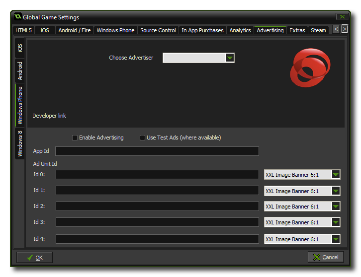
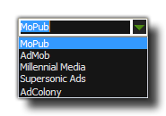

 This tab can be
used to set up and control the add providers you use for your
games, as well as how their adverts are displayed within your game.
There are three sub-tabs provided for each of the target
platforms that permit advertising (iOS, Android, and HTML5).
To switch advertising on for your game, you will need to do either one of two things depending on the target platform. If your game targets iOS or Android, then you will need to check the box for the ads provider that you require and then download the provider as an extension from the Marketplace (you can find more information on this here: Ad Provider Demos V3). If you require a demo of the ad providers on iOS or Android then you can click the link provided beside each provider to download a demo - which contains a help file - from the Marketplace. For all other platforms, ads support is built into GameMaker: Studio and you must first check the box labelled "Enable Advertising" and then select the advertiser that you wish to use as the provider from the drop down menu shown: 
If you wish to test out your adverts in a test game or to see how they look, you can also check the box labelled "Use Test Ads (where available)", and, depending on the provider, you should be able to compile and run your game with advertising coming though as you would see it in a "live" game, but without it actually counting towards your ad revenue. For more information on this feature and to see which companies support it, please see the section Reference - Advertising and Analytics.
NOTE: For iOS and Android the process for getting test ads is slightly different and you should consult the Knowledge Base article for each ad extension.
Each target has a different set of advertising providers (the
image above is just an example) and the list will change as more
become available. Once you have chosen your provider, you should
then choose which advert type you wish to display in your game.
This is done by supplying the Key that the provider has
given you for the advert type and by selecting the shape of
the advert as it should be shown within your game. These shapes
will vary from provider to provider, so you you should check with
them for the exact size and layout of each ad.
You should note that there is one final ad-type that may be
available for your provider, and that is interstitial ads.
These normally take the form of full page adverts which can be
offer walls (essentially a page to promote several different
advertising campaigns), virtual currency deals, or a video and
there are a number of specific functions that can be used to launch
those ads should the provider permit them.
When you have finished specifying your provider and the ads you
wish to support, you will then need to set them up from within your
game code using the functions found in the section: Reference
- Advertising and Analytics.
For information on individual Ad providers, please see the YoYo Knowledge Base.
NOTE: This functionality is limited to the Professional
Version of GameMaker: Studio.